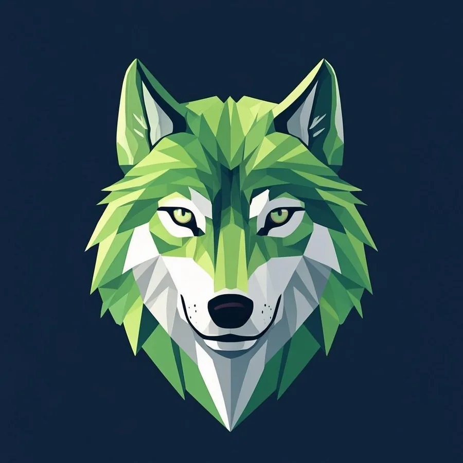

OpenCode
Model-agnostic pair programming in the terminal, routed through my own omnirouter — the right model for every task, one keystroke away.
I’m Reza Bazdar — full‑stack engineer. Web, mobile & desktop apps, network tooling, IoT and AI infrastructure, from one pair of hands.

Security-first backends, realtime platforms, NLP services and PLC programs — everything designed, built and shipped in public, docs and tests included.
Every card leads to a working repository — no mockups, no vaporware.


Every card leads to a working public repository — no mockups, no vaporware.
Languages & tools I ship with
Production-tested skills — from the browser to the factory floor.
JavaScript, TypeScript, Python, Go — my core; also C#, C, PHP, SQL
HTML/CSS, React, Next.js, Tailwind, VitePress, RTL-first design
FastAPI, Node.js, REST, WebSockets, JWT auth, Prisma, OpenAI-compatible APIs
React Native & Expo — Peregrine: a streaming AI console built to a native design bar
Tauri & Electron — lightweight, cross-platform desktop builds
Postman, Newman, pytest, layered contract testing, CI pipelines, gitleaks audits
TCP/IP, proxies & tunnels, edge computing, Cloudflare Workers, VLESS infrastructure
End-to-end encryption, X25519, ChaCha20-Poly1305, secure session design
Model routing, agent orchestration, account pooling, SSE streaming, free-tier bridges
Docker, CI/CD, Hugging Face Spaces, Railway, Render, Fly.io, Koyeb
PLC programming in LD & ST (IEC 61131-3), SCADA concepts, Modbus TCP, IoT integration
My daily drivers — orchestrated so every agent gets the right brain at the right time.
Model-agnostic pair programming in the terminal, routed through my own omnirouter — the right model for every task, one keystroke away.
Parallel execution across sandboxes when a change fans out over many files — twelve tasks, twelve workers, one review pass.
Multi-step planning and codebase-wide edits with surgical precision — the agent I trust with architectural sweeps.
My own orchestration stack — it routes models, schedules jobs and automations end-to-end. The control tower for everything above.
Pick a thread — each one already has shipped code behind it.
Encrypted messengers and self-hosted chat — VeilChat, Goftego. E2E crypto, WebSockets, one-command deploys.
Model routers, OpenAI-compatible bridges and agent orchestrators — OmniRouter, Hermes Stack, GLM Free API.
React Native & Expo apps built to a native design bar — Peregrine, HabitGrid. iOS & Android from one codebase.
Tauri & Electron builds that stay lightweight — cross-platform installers, native menus, tiny footprints.
Single-binary utilities, edge panels, tunnels and VLESS infrastructure — NetPilot and friends, mostly in Go.
PLC programs in LD & ST (IEC 61131-3), Modbus TCP integrations and IoT bridges between shop floor and cloud.
A repo, a spec, or one paragraph is enough — we scope it into a shippable first cut.
Docs, tests and CI appear as it grows — you watch progress land in real commits.
Deployed, monitored and documented — ready to hand over or keep evolving.
Yes — all 28 repositories are public and MIT-licensed. Browse the code, read the build notes, run the tests and reuse anything you find useful.
JavaScript/TypeScript, Python and Go at the core. Expo & React Native for mobile, Tauri and Electron for desktop, PLC (LD/ST) and Modbus TCP for industrial work, Docker and CI for delivery.
Yes — async-first, based in Iran (UTC+3:30). I keep a written trail of decisions in docs and commit history, so timezone gaps never block the work.
I direct an agent team — Hermes Agent as the orchestrator, with Claude Code, Codex and OpenCode as specialized workers. Orchestration, not autopilot: every diff is reviewed and tested by me.
Open-source collaboration starts the same week. Freelance work opens with a scoped one-to-two-week sprint so you get something running before committing further.
From spark to production — why not start today?